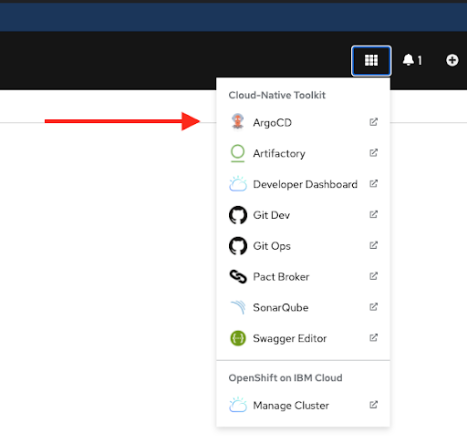

Argo - Continuous Delivery
Prerequisites
- Tekton pipeline is green - all stages are passing
Setup
Use the following instructions to set up a new continuous delivery controller using ArgoCD.
Stop: make sure your pipeline is green before setting up ArgoCD
-
Determine the name of the new project. Usually
project<user-number>-<app-repo-name>-<environment> -
Update GitOps repository
-
Run
oc consoleto open the web console. - Click the "9 box" menu, then select "Git Ops", then copy the http link.
- In the terminal, CD to your $HOME directory
cd ~ - Type
git clone, paste in the gitops http url, hit enter. cd gitopsgit checkout -b add-<user-number>-<app-repo-name>-<environment>orgit checkout -b add-<squad-number>-<app-repo-name>-<environment>- Run
code .and find the application you want to deploy under the/qafolder, and copy that entire folder to the new<environment>folder (i.e. production) - Git add, commit, and push to your branch.
-
Create a new pull request and immediately merge it. After merging, click the delete branch button.
-
Add ArgoCD controller
- Run
oc consoleto open the web console. - On the OpenShift console page, Click the "9 box" menu, then select "ArgoCD" 
- Accept the security warnings (easiest in Chrome)
- Login via openshift
- Allow selected permissions
- Click "new app"
- Fill in the form
- General
- Application name: This must be unique to the entire cluster. use
project<user-number>-<app-repo-name>-<environment>orsquad<squad-number>-<app-repo-name>-<environment> - Project = default
- Sync Policy = automatic
- Check PRUNE RESOURCES and SELF HEAL
- Sync Options = Check "use a schema to validate resource manifests" and "auto-create namespace"
- Application name: This must be unique to the entire cluster. use
- Source
- Repository = url to gitops repository ("9 box" menu, click "Git Ops")
- Revision = HEAD
- Path = path to the project environment folder you just created. Usually
<environment>/project<user-number>/<app-repo-name>
- Destination
- cluster = select the one available option
- namespace = the target namespace. Usually
project<user-number>-<app-repo-name>-<environment>
- General
- Click create at the top
- Now the ArgoCD controller is displayed. Shortly you will notice that the pod creation failed, and it has a status of
ImagePullBackOff. This is because the new namespace is trying to pull images created in another namespace. You will fix this in the next step. - Give the new environment permission to pull images from qa namespace
- run
If successful, you will see something like the following:
oc policy add-role-to-group system:image-puller system:serviceaccounts:<new-project-name> -n <dev-project-name>clusterrole.rbac.authorization.k8s.io/system:image-puller added: "system:serviceaccounts:<new-project-name>" - Click the menu on the right side of the pod in ArgoCD then select "delete". OpenShift will immediately create a new pod and this time it will have permission to pull images from the other namespace.
- If successful, you will see something like the following when you open the ArgoCD controller (Note: every heart is green):

- What just happened?
You have a new environment. Let's assume it is production.
qa and production are running the same version of your application because the version number specified in gitops <environment>/project<user-number>/<app-repo-name>/requirements.yaml is the same in both environments.
Your CI/CD pipeline now looks like the following sequence diagram:

Promoting a new version to production
- Update the application version in the
package.jsonfile and commit it, so a new image is built by the Tekton pipeline. - Update GitOps repository
- In the terminal, CD to your $HOME directory
cd ~/gitops git checkout -b update-<user-number>-<app-repo-name>-<environment>orgit checkout -b update-<squad-number>-<app-repo-name>-<environment>- Update and update the version in the
<environment>/project<user-number>/<app-repo-name>/requirements.yamlfile. - Git add, commit, and push to your branch.
- Create a new pull request and immediately merge it. After merging, click the delete branch button.
- Open the ArgoCD controller and note the new version is running in production.
Troubleshooting
| Error Message | Solution |
|---|---|
ErrImagePull or ImagePullBackOff |
Allow your production namespace to pull images created from your dev namespace run oc policy add-role-to-group system:image-puller system:serviceaccounts:<new-project> -n <dev-project> |
error: object has been deleted |
The Argo project has the same name as your repository. Delete the Argo project and recreate it with a new unique name. |